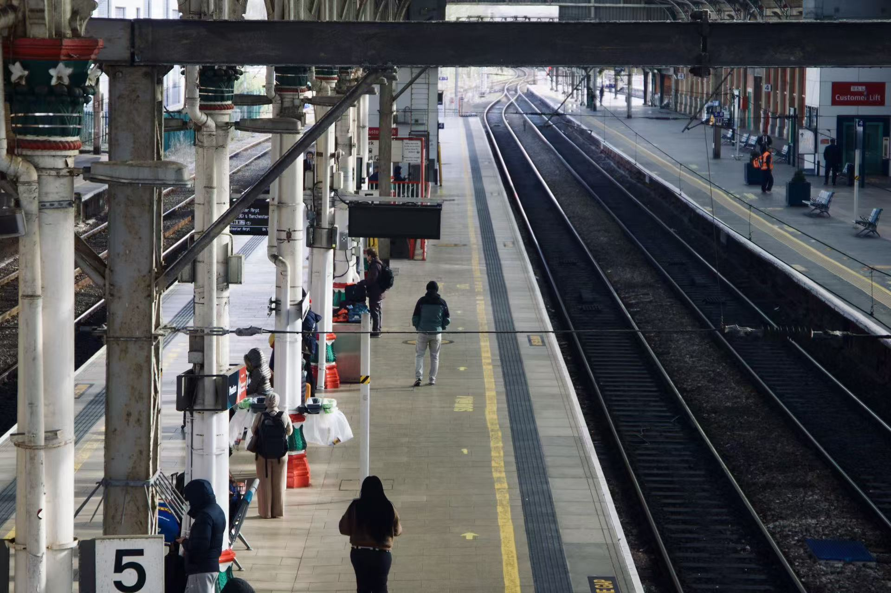
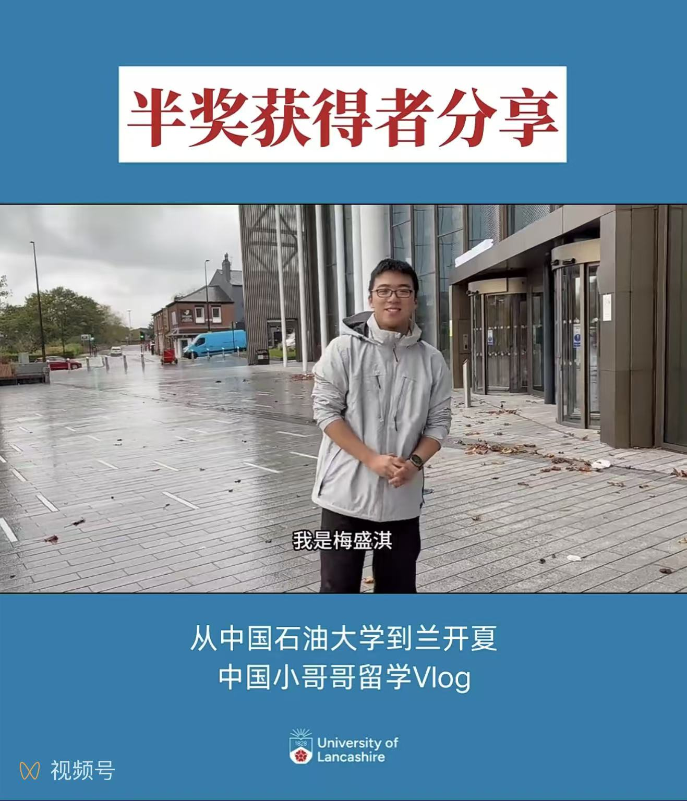
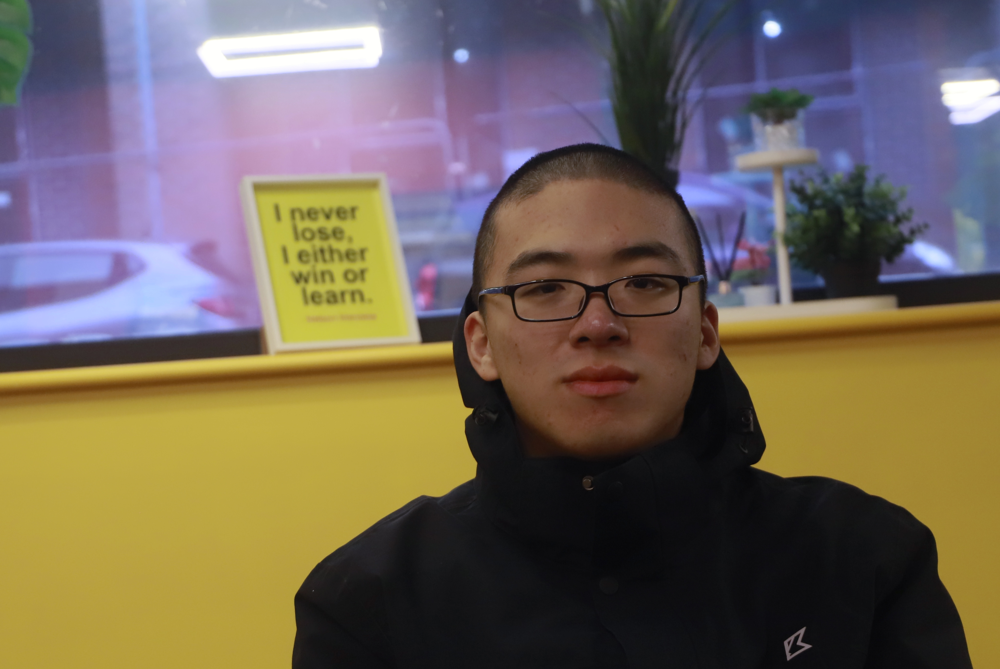
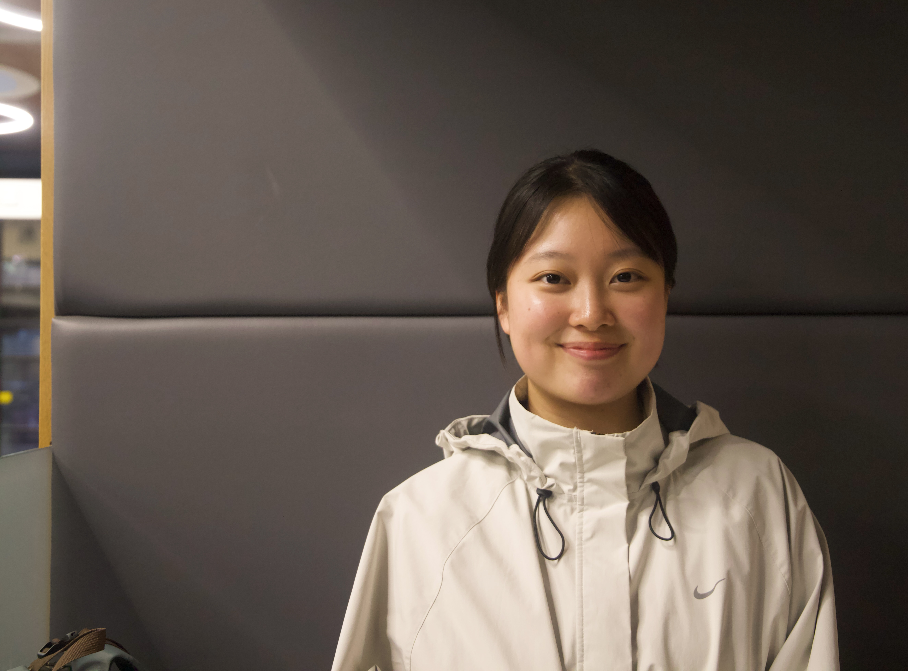
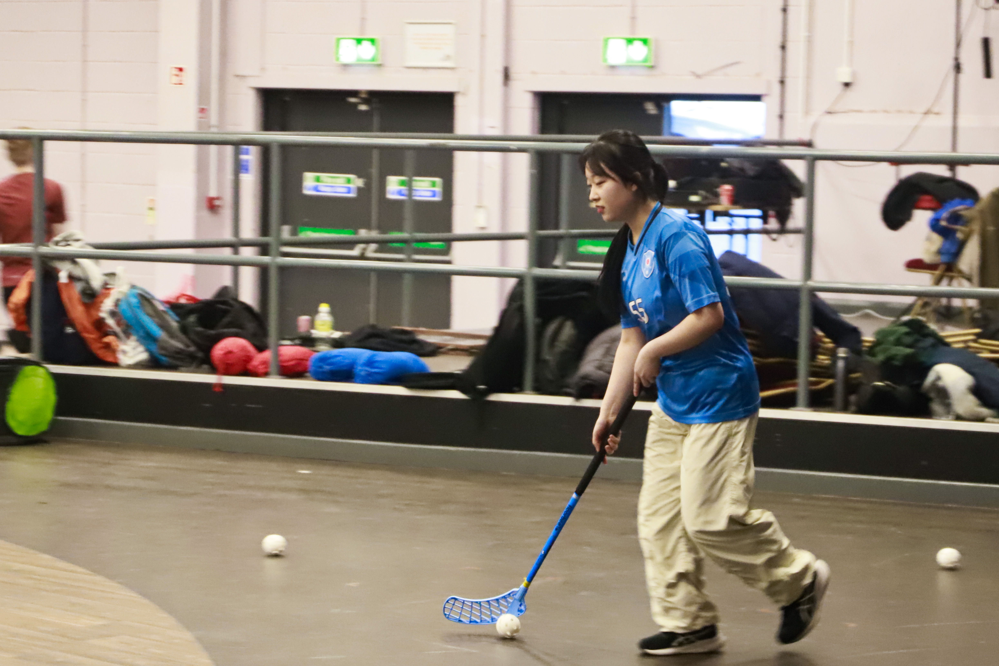
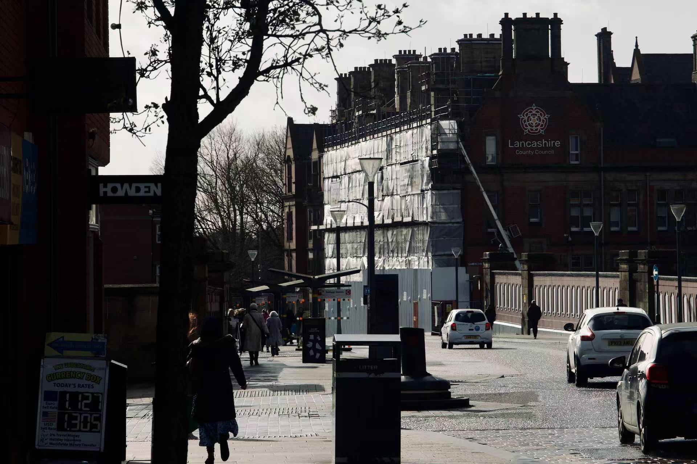

Preston, UK — 25 March 2026
In a small northern city, international students build routines, chase opportunities, and confront the limits of belonging — where some begin to settle, while others are still waiting.

Preston railway station, where journeys begin and end.
“I’m still waiting for an opportunity,” Evan said, his gaze drifting briefly towards the window.
For the young Chinese student, time is starting to narrow. By August, he may have to return to China, stepping into a future that remains uncertain.
Evan Mei is an exchange student at the University of Lancashire(Ulan). He arrived here last September.
As an exchange student from the China University of Petroleum (Beijing), a key public university in China, he is approaching the end of his one-year program — yet his job search has brought little result.
He had hoped to stay.
A scholarship was one of the key reasons behind his decision for choosing to study here. For him, the 1 year abroad was a form of experiment — a chance to test possibilities beyond home, in a smaller city like Preston, where life feels slower and more manageable.
In one of the university’s official promotional videos, he introduced himself: “I was awarded a half-tuition scholarship this year.”
Before the lens, he speaks with confidence and ease.

Evan introduced the Ulan as a Chinese student ambassador.
When asked why he wanted to stay, his answer came without hesitation.
“Because I don’t think the effort I put in matches what I get in return in China.”
For him, this imbalance was clear. As an accounting student from the China University of Petroleum (Beijing), he earned around ¥100 a day (approximately £11) during his internships — about ¥2,800 (£302) per month.
In Beijing, where he studied, the average monthly income stands at ¥7,424 (£802). Even without comparing to full-time employees, such pay makes it difficult to sustain basic living costs.
But income was only part of the story.
He recalls the less visible aspects: working from 8 am to 11 pm (typical Chinese overtime work culture), delayed wages that were never fully resolved, and attempts to defend his rights that ultimately led nowhere.
Experiences like these gradually made the idea of leaving feel less like a choice, and more like a direction.

Evan in his studio restroom
In the UK, Evan began searching for opportunities.
“I’ve sent out around 50 applications,” he said.
Yet the process has been far from smooth. Economic uncertainty, mismatched qualifications, and the limited recognition of overseas experience have all become barriers.
Two weeks ago, he attended an interview at a financial company in Manchester. He is still waiting for a response.
“I think language is still the biggest obstacle,” he said, “even if I can manage daily communication.”

Chanhee Kang in Ulan
Meanwhile, Chanhee’s days move to a steadier rhythm — classes, gym sessions, twice-weekly floorball games, and a part-time job at a sushi restaurant in Manchester, filling her schedule and giving her days a steady pace.
Chanhee Kang, a digital design student from South Korea, has been living in Preston for nearly two years.
“I travelled to the UK with my elder sister before, and I remembered this city,” she said. “I feel like it's very same eight years ago.”
That memory may have played a part in her decision to return and study here.
She found her part-time job through a friend. The kind manager, also Korean, made the environment feel familiar from the beginning.
“I make sushi. It’s a very new experience for me, completely different from my major.”
Her motivation is straightforward.
“Cause I need money — to travel everywhere,” she said.
Earning around £12 per hour, she considers the pay “quite good”. She also enjoys small perks at work. “I like salmon, so I can eat it anytime,” she added with a smile.
Still, the job is not without its challenges. Eight hours a day leaves her physically tired — though she rarely lingers on it.
She worked there for six months previously. When she left, her colleagues wrote her a letter and took photos together. “They said they would miss me,” she recalled.
But such opportunities are not always easy to come by.
“I know some British students have part-time jobs, but many of my international friends don’t. It’s hard to find one,” she said.
She had also tried to look for work in Preston, without success, because of language barriers. That’s why she turned to the sushi restaurant in Manchester instead.
Now, she is planning to try something new this summer — perhaps traveling. Compared to when she first arrived, she feels more at ease with her life.
Asked to describe her current state in one word, she paused briefly.
“Enjoyable.”

Chanhee in her floorball game
In the common room beneath his apartment, Evan told me he had also looked beyond the UK.
Canada, Spain, and even countries with smaller language markets were all options he had considered.
Most days, he sits alone in his studio, sending out applications one by one.
Filtering, comparing, adjusting — the process takes about ten minutes per application. Four or five a day.
Rejections arrive just as steadily — and just as quietly.
“Sometimes I just glance at them and move on,” he said calmly.
“I don’t think going back to China is a failure. Maybe it’s just another choice,” he added.
“There are times when I feel I’m a good fit for the role, but I still get rejected. It’s a bit discouraging, but… it’s normal.”
He has joined several job-seeking groups, where people exchange information, share interview experiences, and occasionally offer each other comfort.
“But I don’t think it helps much,” he said. “In the end, it’s still a path you have to walk alone.”
When asked what advice he would give to younger Chinese students considering staying in the UK, he paused.
“Even if it’s difficult, just keep trying… keep trying.”
His voice slowed as he finished the sentence.

Preston Street
Outside, the rain in Preston had not stopped.
Some are still waiting for an opportunity, while others are beginning to find a rhythm — though neither is entirely free from uncertainty.
And as for whether to stay, or to leave—
the answer, perhaps, is still on the way.
By Ze Xu